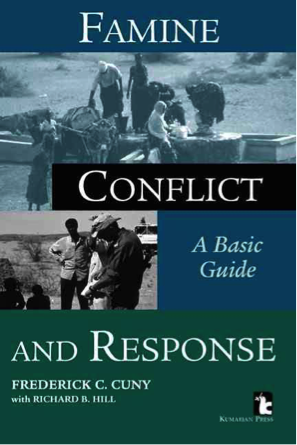

Famine, Conflict and Response: a Basic Guide
Fred Cuny adopts an economic approach to wartime famine that is still considered innovative and challenging by field experts. His international fieldwork in both natural and man-made disasters is visionary and his approach to famine pragmatic. This book focuses on counter-famine measures revolving around people’s livelihoods, giving humanitarian relief workers a more permanent solution to world hunger.
